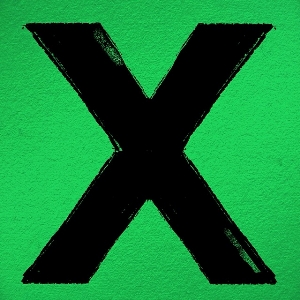
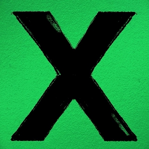
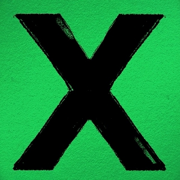

Ed Sheeran
the god of guitar

Edward Christopher Sheeran MBE (born 17 February 1991) is an English singer-songwriter. Born in Halifax, West Yorkshire and raised in Framlingham, Suffolk, he began writing songs around the age of eleven. In early 2011, Sheeran independently released the extended play, No. 5 Collaborations Project. He signed with Asylum Records the same year.
+ (pronounced "plus") is the debut studio album by English singer-songwriter Ed Sheeran. It was released on 9 September 2011 by Asylum Records and Atlantic Records. The album is considered Sheeran's commercial breakthrough. He previously released five EPs independently. Jake Gosling and Sheeran produced the majority of the album, with additional production by American hip hop producer No I.D.
÷ ("Divide") is the third studio album by English singer-songwriter Ed Sheeran. It was released on 3 March 2017 through Asylum Records and Atlantic Records. "Castle on the Hill" and "Shape of You" were released as the album's lead singles on 6 January 2017. The album won the Grammy Award for Best Pop Vocal Album at the 60th Annual Grammy Awards.
× (pronounced "multiply") is the second studio album by English singer-songwriter, Ed Sheeran. It was released on 20 June 2014 in Australia and New Zealand, and worldwide on 23 June through Asylum Records and Atlantic Records.
= ("equals") is the fifth studio album[3][4] by English singer-songwriter Ed Sheeran, released on 29 October 2021 by Asylum and Atlantic Records.[5] The album was supported by the singles "Bad Habits", "Shivers", "Overpass Graffiti", "The Joker and the Queen", "2step" and a promotional single, "Visiting Hours".